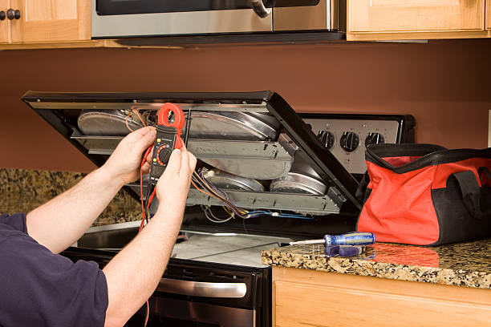

Spin issues
Appliance leaking water?We find the cause and find the leak and restore clean, reliable operation.
If your appliance is leaking from a hose, seal, pump area, tray, or nearby connection, we inspect the source carefully and repair the real issue.
Accurate testing
Lid switch, drive belt, motor, and control checks.
Spin system review
Balance, basket, and drive movement checked clearly.
Clean repair
Clear estimate before work starts.
What we check
The main reasons an appliance leaks water
Appliance leak problems often come from a loose hose, worn seal, cracked tray, drain blockage, or failed connection. We test the unit first, then recommend the most direct fix.

Hose, seal, and connection checks
If a hose loosens, a seal wears out, or a tray cracks, the appliance can start leaking water during normal operation.
Drain path and collection area
Drain problems, cracked collection areas, or blocked water paths can create active leaks that should be checked quickly.
Leak path and nearby water points
We check the hose path, collection area, nearby fittings, and water trail to find where the leak begins.
Cycle and water-flow checks
We confirm whether the board is sending the correct run and water-control commands.
Helpful note
Tell us where you notice the leak, whether it is steady or intermittent, and if it starts when the appliance runs. That helps us narrow the likely cause quickly.
Our process
A clean workflow for reliable leak repair
We do not guess and we do not swap random parts. We diagnose the leak, explain the fix, and verify safe operation before we leave.
1. Inspect
We check the leak path, drain route, seals, and control response.
2. Confirm
We narrow the exact leak source and show you the next step.
3. Repair
We complete the repair with tidy, careful workmanship.
4. Verify
We run the appliance and confirm the leak is resolved.
What you get
Clear estimate, targeted repair, and an appliance that drains properly
Common causes
What usually causes a leak problem
Blocked drain path or cracked pan
A blocked drain path or cracked pan can lead to water leaking while the appliance is running.
Worn seal or cracked part
A worn seal or cracked part can let water escape during normal operation.
Drain or pump issue
A weak pump or blocked drain path can let water collect where it should not.
Loose hose or fitting
A loose hose or fitting can create a slow leak that gets worse over time.
Control board issue
If the board does not send the right command, the appliance may keep leaking or fail to clear water properly.
Blocked drain path or cracked pan
A blocked drain path, worn seal, or cracked pan can let water escape during normal use.
Help
Quick answers about leak repair
Yes. A clogged drain line can back water up and make it look like the whole unit is leaking.
Yes. A clogged drain line can back water up and make it look like the whole unit is leaking.
It is better to stop and have it checked. Continued leaking can damage nearby surfaces and may point to a larger seal or drain problem.
Let us know where the sparks appear, whether there is a popping sound, and if it happens with every use. That gives us a and we'll guide youer starting point.